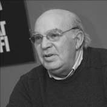

Doğan Özlem

1944’te İzmir’de doğdu. İzmir Atatürk Lisesi’nde başladığı lise öğrenimini tamamlayamadan kunduracı kalfası ve tezgâhtar olarak çalışmak zorunda kaldı. 1965’te Sivas’a er olarak askere gitti. Liseyi askerliği sırasında dışarıdan sınavlara girerek bitirdi. Yine askerliği sırasında üniversite giriş sınavını kazandı. 1967’deki terhisinden sonra İstanbul Üniversitesi Edebiyat Fakültesi Felsefe Bölümü’nde yükseköğrenimine başladı ve bu bölümden 1971’de mezun oldu. 1971-1974 arasında Almanya’da bulundu ve çeşitli işlerde çalıştı. Mezun olduğu bölümde 1974’te başlayıp daha sonra Max Weber’de Bilim ve Sosyoloji (1990) adıyla yayımlanan doktora tezini 1979’da tamamladı. Yükseköğrenimi ve doktora çalışması sırasında (1967-1979) Almanya’da ve Türkiye’de işçi, büro memuru, sendikacı, muhasebeci ve yönetici olarak çalıştı. 1980’de, otuz altı yaşındayken, Ege Üniversitesi Edebiyat Fakültesi Felsefe Bölümü’nde asistan olarak göreve başladı. 1988’de doçent, 1993’te profesör oldu. 2001’de kendi isteğiyle emekliye ayrıldıktan sonra, aynı yıl içinde, Muğla Üniversitesi Fen Edebiyat Fakültesi Felsefe Bölümü’nde yeniden akademik hayata döndü ve uzun süre bölüm başkanlığı yaptı. Halen Yeditepe Üniversitesi Felsefe Bölümü’nde öğretim üyesidir. 2003’te adına armağan kitap yayımlandı. 2004’te TÜBA – Türkiye Bilimler Akademisi Hizmet Ödülü’nü aldı. Halen Yeditepe Üniversitesi Felsefe Bölümü’nde öğretim üyesidir.